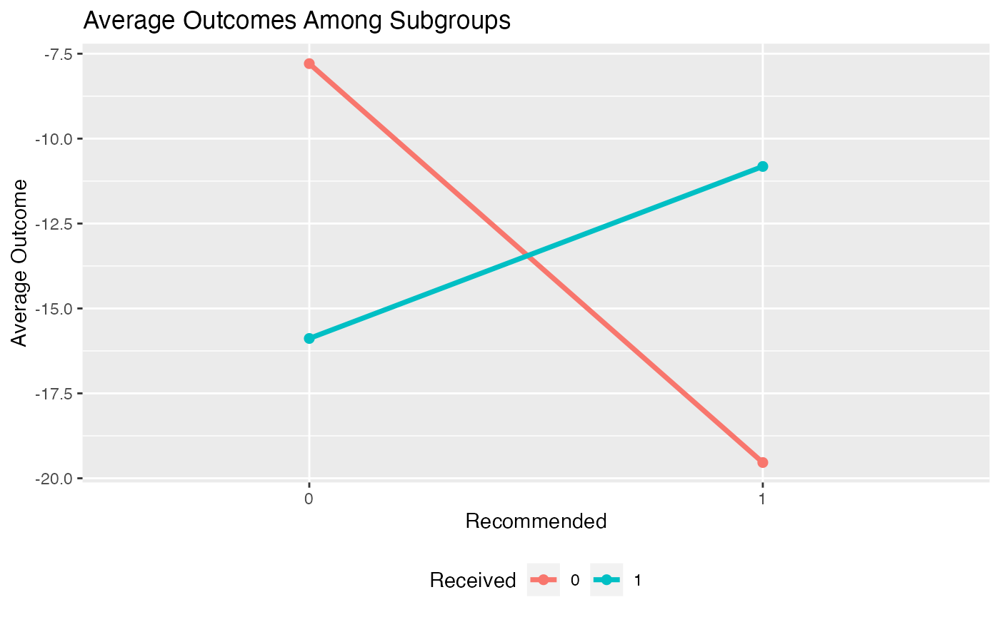
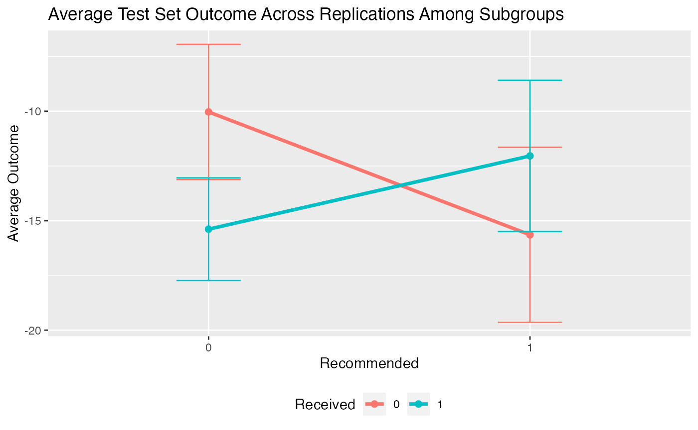

Usage of the Personalized Package
Jared Huling
2022-07-07
Source:vignettes/usage_of_the_personalized_package.Rmd
usage_of_the_personalized_package.RmdIntroduction to personalized
The personalized package aims to provide an entire
analysis pipeline that encompasses a broad class of statistical methods
for subgroup identification / personalized medicine.
The general analysis pipeline is as follows:
- Construct propensity score function and check propensity score diagnostics
- Choose and fit a subgroup identification model
- Estimate the resulting treatment effects among estimated subgroups
- Visualize and examine model and subgroup treatment effects
The available subgroup identification models are those under the
purview of the general subgroup identification framework proposed by
Chen, et al. (2017). In this section we will give a brief summary of
this framework and what elements of it are available in the
personalized package.
In general we are interested in understanding the impact of a treatment on an outcome and in particular determining if and how different patients respond differently to a treatment in terms of their expected outcome. Assume the outcome we observe \(Y\) is such that larger values are preferable. In addition to the outcome, we also observe patient covariate information \(X \in \mathbb{R}^p\) and the treatment status \(T \in \{-1,1\}\), where \(T = 1\) indicates that a patient received the treatment, and \(T = -1\) indicates a patient received the control. For the purposes of this package, we consider an unspecified form for the expected outcome conditional on the covariate and treatment status information: \[E(Y|T, X) = g(X) + T\Delta(X)/2,\] where \(\Delta(X) \equiv E(Y|T=1, X) - E(Y|T=-1, X)\) is of primary interest and \(g(X) \equiv \frac{1}{2}\{E(Y|T=1, X) + E(Y|T=-1, X) \}\) represents covariate main effects. Here, \(\Delta(X)\) represents the interaction between treatment and covariates and thus drives heterogeneity of main effect. The purpose of the package is in estimation of \(\Delta(X)\) or monotone transformations of \(\Delta(X)\) which can be used to stratify the population into subgroups (e.g. a subgroup of patients who benefit from the treatment and a subgroup who does not benefit).
We call the term \(\Delta(X)\) a benefit score, as it reflects how much a patient is expected to benefit from a treatment in terms of their outcome. For a patient with \(X = x\), if \(\Delta(x) > 0\) (assuming larger outcomes are better), the treatment is beneficial in terms of the expected outcome, and if \(\Delta(X) \leq 0\), the control is better than the treatment. Hence to identify which subgroup of patients benefits from a treatment, we seek to estimate \(\Delta(X)\).
In the framework of Chen, et al. (2017), there are two main methods for estimating subgroups. The first is called the weighting method. The weighting method estimates \(\Delta(X)\) (or monotone transformations of it) by minimizing the following objective function with respect to \(f(X)\): \[L_W(f) = \frac{1}{n}\sum_{i = 1}^n\frac{M(Y_i, T_i\times f(x_i)) }{ {T_i\pi(x_i)+(1-T_i)/2} },\] where \(\pi(x) = Pr(T = 1|X = x)\) is the propensity score function. Here, \(\hat{f}\) is our estimated benefit score. Hence \(\hat{f} = \mbox{argmin}_f L_W(f)\) is our estimate of \(\Delta(X)\). If we want a simple functional form for the estimate \(\hat{f}\), we can restrict the form of \(f\) such that it is a linear combination of the covariates, i.e. \(f(X) = X^T\beta\). Hence \(\hat{f}(X) = X^T\hat{\beta}\).
The A-learning estimator is the minimizer of \[L_A(f) = \frac{1}{n}\sum_{i = 1}^n M(Y_i, {\{(T_i+1)/2 -\pi(x_i)\} } {\times f(x_i))}.\]
Choice of \(M\) function
The personalized package offers a flexible range of
choices both for the form of \(f(X)\)
and also for the loss function \(M(y,
v)\). Most choices of \(f\) and
\(M\) can be used for either the
weighting method or for the A-learning method. In this package, we limit
the use of \(M\) to natural choices
corresponding to the type of outcome. The squared error loss \(M(y, v) = (v - y) ^ 2\) corresponds to
continuous responses but can also be used for binary outcomes, however
the logistic loss \(M(y, v) = y \cdot log(1 +
\exp\{-v\})\) corresponds to binary outcomes and the loss
associated with the negative partial likelihood of the Cox proportional
hazards model corresponds to time-to-event outcomes.
| Name | Outcomes | Loss |
|---|---|---|
| Squared Error | C/B/CT | \(M(y, v) = (v - y) ^ 2\) |
| OWL Logistic | C/B/CT | \(M(y, v) = y\log(1 + \exp\{-v\})\) |
| OWL Logistic Flip | C/B/CT | \(M(y, v) = \vert y\vert \log(1 + \exp\{-\mbox{sign}(y)v\})\) |
| OWL Hinge | C/B/CT | \(M(y, v) = y\max(0, 1 - v)\) |
| OWL Hinge Flip | C/B/CT | \(M(y, v) = \vert y\vert\max(0, 1 - \mbox{sign}(y)v)\) |
| Logistic | B | \(M(y, v) = -[yv - \log(1 + \mbox{exp}\{-v\})]\) |
| Poisson | CT | \(M(y, v) = -[yv - \exp(v)]\) |
| Cox | TTE | \(M(y, v) = -\left\{ \int_0^\tau\left( v - \log[E\{ e^vI(X \geq u) \}] \right)\mathrm{d} N(u) \right\}\) |
where “C” indicates usage for continuous outcomes, “B” indicates usage for binary outcomes, “CT” indicates usages for count outcomes, and “TTE” indicates usages for time-to-event outcomes, and for the last loss \(y = (X, \delta) = \{ \widetilde{X} \wedge C, I(\widetilde{X} \leq t) \}\), \(\widetilde{X}\) is the survival time, & \(C\) is the censoring time, \(N(t) = I(\widetilde{X} \leq t)\delta\), and \(\tau\) & is fixed time point where \(P(X \geq \tau) > 0\).
Choice of \(f\)
The choices of \(f\) offered in the
personalized package are varied. A familiar, interpretable
choice of \(f(X)\) is \(X^T\beta\). Also offered is an additive
model, i.e. \(f(X) = \sum_{j =
1}^pf_j(X_j)\); this option is accessed through use of the
mgcv package, which provides estimation procedures for
generalized additive models (GAMs). Another flexible, but less
interpretable choice offered here is related to gradient boosted
decision trees, which model \(f\) as
\(f(X) = \sum_{k = 1}^Kf_k(X)\), where
each \(f_k\) is a decision tree
model.
Variable Selection
For subgroup identification models with \(f(X) = X^T\beta\), the
personalized package also allows for variable selection.
Instead of minimizing \(L_W(f)\) or
\(L_A(f)\), we instead minimize a
penalized version: \(L_W(f) +
\lambda||\beta||_1\) or \(L_A(f) +
\lambda||\beta||_1\).
Extension to multi-category treatments
Often, multiple treatment options are available for patients instead of one treatment option and a control and the researcher may wish to understand which of all treatment options are the best for which patients. Extending the above methodology to multi-category treatment results in added complications, and in particular there is no straightforward extension of the A-learning method for multiple treatment settings. In the supplementary material of , the weighting method was extended to estimate a benefit score corresponding to each level of a treatment subject to a sum-to-zero constraint for identifiability. In particular, we are interested in estimating (the sign) of \[\begin{eqnarray} \Delta_{kl}(x) \equiv \{ E(Y | T = k, { X} = { x}) - E(Y | T = l, X = { x}) \} \label{definition of Delta_kl} \end{eqnarray}\] If \(\Delta_{kl}(x) > 0\), then treatment \(k\) is preferable to treatment \(l\) for a patient with \(X = x\). For each patient, evaluation of all pairwise comparisons of the \(\Delta_{kl}(x)\) indicates which treatment leads to the largest expected outcome. The weighting estimators of the benefit scores are the minimizers of the following loss function: \[\begin{equation} \label{eqn:weighting_mult} L_W(f_1, \dots, f_{K}) = \frac{1}{n}\sum_{i = 1}^n\frac{\boldsymbol M(Y_i, \sum_{k = 1}^{K}I(T_{i} = k)\times f_k(x_i) ) }{ { Pr(T = T_i | X = x_i)} }, \end{equation}\] subject to \(\sum_{k = 1}^{K}f_k(x_i) = 0\). Clearly when \(K = 2\), this loss function is equivalent to (\(\ref{eqn:weighting}\)).
Estimation of the benefit scores in this model is still challenging without added modeling assumptions, as enforcing \(\sum_{k = 1}^{K}f_k(x_i) = 0\) may not always be feasible using existing estimation routines. However, if each \(\Delta_{kl}(X)\) has a linear form, i.e. \(\Delta_{kl}(X) = X^\top\boldsymbol \beta_k\) where \(l\) represents a reference treatment group, estimation can then easily be fit into the same computational framework as for the simpler two treatment case by constructing an appropriate design matrix. Thus, for multiple treatments the package is restricted to linear estimators of the benefit scores. For instructive purposes, consider a scenario with three treatment options, \(A\), \(B\), and \(C\). Let \(\boldsymbol X = ({\boldsymbol X}_A^\top, {\boldsymbol X}_B^\top, {\boldsymbol X}_C^\top )^\top\) be the design matrix for all patients, where each \({\boldsymbol X}_k^\top\) is the sub-design matrix of patients who received treatment \(k\). Under \(\Delta_{kl}(X) = X^\top\boldsymbol \beta_k\) with \(l\) as the reference treatment, we can construct a new design matrix which can then be provided to existing estimation routines in order to minimize (\(\ref{eqn:weighting_mult}\)). With treatment \(C\) as the reference treatment, the design matrix is constructed as \[ \widetilde{{\boldsymbol X}} = \mbox{diag}(\boldsymbol J)\begin{pmatrix} {\boldsymbol X}_A & \boldsymbol 0 \\ \boldsymbol 0 & {\boldsymbol X}_B \\ {\boldsymbol X}_C & {\boldsymbol X}_C \end{pmatrix}, \] where the \(i\)th element of \(\boldsymbol J\) is \(2I(T_i \neq C) - 1\) and the weight vector \(\boldsymbol W\) is constructed with the \(i\)th element set to \(1 / Pr(T = T_i | X = {x}_i)\). Furthermore denote \(\widetilde{\boldsymbol \beta} = (\boldsymbol \beta_A^\top, \boldsymbol \beta_B^\top)^\top\). Hence \(\widetilde{{\boldsymbol X}}^\top\widetilde{\boldsymbol \beta} = {\boldsymbol X}_A^\top\boldsymbol \beta_A + {\boldsymbol X}_B^\top\boldsymbol \beta_B - {\boldsymbol X}_C^\top(\boldsymbol \beta_A + \boldsymbol \beta_B)\), and thus the sum-to-zero constraints on the benefit scores hold by construction.
Quick Usage Reference
First simulate some data where we know the truth. In this simulation, the treatment assignment depends on covariates and hence we must model the propensity score \(\pi(x) = Pr(T = 1 | X = x)\). In this simulation we will assume that larger values of the outcome are better.
library(personalized)
set.seed(123)
n.obs <- 1000
n.vars <- 25
x <- matrix(rnorm(n.obs * n.vars, sd = 3), n.obs, n.vars)
# simulate non-randomized treatment
xbetat <- 0.5 + 0.25 * x[,11] - 0.25 * x[,2]
trt.prob <- exp(xbetat) / (1 + exp(xbetat))
trt <- rbinom(n.obs, 1, prob = trt.prob)
# simulate delta
delta <- (0.5 + x[,2] - 0.5 * x[,3] - 1 * x[,11] + 1 * x[,1] * x[,12] )
# simulate main effects g(X)
xbeta <- x[,1] + x[,11] - 2 * x[,12]^2 + x[,13] + 0.5 * x[,15] ^ 2
xbeta <- xbeta + delta * (2 * trt - 1)
# simulate continuous outcomes
y <- drop(xbeta) + rnorm(n.obs)Creating and Checking Propensity Score Model
The first step in our analysis is to construct a model for the
propensity score. In the personalized package, we need to
wrap this model in a function which inputs covariate values and the
treatment statuses and outputs a propensity score between 0 and 1. Since
there are many covariates, we use the lasso to select variables in our
propensity score model:
# create function for fitting propensity score model
prop.func <- function(x, trt)
{
# fit propensity score model
propens.model <- cv.glmnet(y = trt,
x = x,
family = "binomial")
pi.x <- predict(propens.model, s = "lambda.min",
newx = x, type = "response")[,1]
pi.x
}We then need to make sure the propensity scores have sufficient
overlap between treatment groups. We can do this with the
check.overlap() function, which plots densities or
histograms of the propensity scores for each of the treatment
groups:
check.overlap(x, trt, prop.func)
We can see that the propensity scores mostly have common support except a small region near 0 where there are no propensity scores for the treatment arm.
Fitting Subgroup Identification Models
The next step is to choose and fit a subgroup identification model.
In this example, the outcome is continuous, so we choose the squared
error loss function. We also choose the model type (either the weighting
or the A-learning method). The main function for fitting subgroup
identification models is fit.subgroup. Since there are many
covariates, we choose a loss function with a lasso penalty to select
variables. The underlying fitting function here is
cv.glmnet(). We can pass to fit.subgroup()
arguments of the cv.glmnet() function, such as
nfolds for the number of cross validation folds.
subgrp.model <- fit.subgroup(x = x, y = y,
trt = trt,
propensity.func = prop.func,
loss = "sq_loss_lasso",
nfolds = 5) # option for cv.glmnet
summary(subgrp.model)## family: gaussian
## loss: sq_loss_lasso
## method: weighting
## cutpoint: 0
## propensity
## function: propensity.func
##
## benefit score: f(x),
## Trt recom = 1*I(f(x)>c)+0*I(f(x)<=c) where c is 'cutpoint'
##
## Average Outcomes:
## Recommended 0 Recommended 1
## Received 0 -7.792 (n = 177) -19.5361 (n = 224)
## Received 1 -15.8839 (n = 437) -10.8195 (n = 162)
##
## Treatment effects conditional on subgroups:
## Est of E[Y|T=0,Recom=0]-E[Y|T=/=0,Recom=0]
## 8.0919 (n = 614)
## Est of E[Y|T=1,Recom=1]-E[Y|T=/=1,Recom=1]
## 8.7166 (n = 386)
##
## NOTE: The above average outcomes are biased estimates of
## the expected outcomes conditional on subgroups.
## Use 'validate.subgroup()' to obtain unbiased estimates.
##
## ---------------------------------------------------
##
## Benefit score quantiles (f(X) for 1 vs 0):
## 0% 25% 50% 75% 100%
## -9.1348 -2.5640 -0.7204 0.8641 7.8583
##
## ---------------------------------------------------
##
## Summary of individual treatment effects:
## E[Y|T=1, X] - E[Y|T=0, X]
##
## Min. 1st Qu. Median Mean 3rd Qu. Max.
## -18.270 -5.128 -1.441 -1.526 1.728 15.717
##
## ---------------------------------------------------
##
## 3 out of 25 interactions selected in total by the lasso (cross validation criterion).
##
## The first estimate is the treatment main effect, which is always selected.
## Any other variables selected represent treatment-covariate interactions.
##
## Trt1 V2 V11 V21
## Estimate -0.8104 0.7112 -0.353 0.2706We can then plot the outcomes of patients in the different subgroups:
plot(subgrp.model)
Alternatively, we can create an interaction plot. This plot represents the average outcome within each subgroup broken down by treatment status. If the lines in the interaction plots cross, that indicates there is a subgroup treatment effect.
plot(subgrp.model, type = "interaction")
Evaluating Treatment Effects within Estimated Subgroups
Unfortunately, if we simply look at the average outcome within each
subgroup, this will give us a biased estimate of the treatment effects
within each subgroup as we have already used the data to estimate the
subgroups. Instead, to get a valid estimate of the subgroup treatment
effects we can use a bootstrap approach to correcting for this bias. We
can alternatively repeatedly partition our data into training and
testing samples. In this procedure for each replication we fit a
subgroup model using the training data and then evaluate the subgroup
treatment effects on the testing data. The argument B
specifies the number of replications and the argument
train.fraction specifies what proportion of samples are for
training in the training and testing partitioning method. Normally this
would be set to a very large number, such as 500 or 1000.
Both of these approaches can be carried out using the
validate.subgroup() function.
validation <- validate.subgroup(subgrp.model,
B = 10L, # specify the number of replications
method = "training_test_replication",
train.fraction = 0.75)
validation## family: gaussian
## loss: sq_loss_lasso
## method: weighting
##
## validation method: training_test_replication
## cutpoint: 0
## replications: 10
##
## benefit score: f(x),
## Trt recom = 1*I(f(x)>c)+0*I(f(x)<=c) where c is 'cutpoint'
##
## Average Test Set Outcomes:
## Recommended 0 Recommended 1
## Received 0 -10.0324 (SE = 3.0877, n = 46.2) -15.6445 (SE = 3.9982, n = 56)
## Received 1 -15.3881 (SE = 2.3438, n = 105.8) -12.0415 (SE = 3.4534, n = 42)
##
## Treatment effects conditional on subgroups:
## Est of E[Y|T=0,Recom=0]-E[Y|T=/=0,Recom=0]
## 5.3557 (SE = 4.7726, n = 152)
## Est of E[Y|T=1,Recom=1]-E[Y|T=/=1,Recom=1]
## 3.603 (SE = 4.4692, n = 98)
##
## Est of
## E[Y|Trt received = Trt recom] - E[Y|Trt received =/= Trt recom]:
## 4.1217 (SE = 3.2018)We can then plot the average outcomes averaged over all replications of the training and testing partition procedure:
plot(validation) From the above plot we can evaluate what the impact of the subgroups is.
Among patients for whom the model recommends the control is more
effective than the treatment, we can see that those who instead take the
treatment are worse off than patients who take the control. Similarly,
among patients who are recommended the treatment, patients who take the
treatment are better off on average than patients who do not take the
treatment.
From the above plot we can evaluate what the impact of the subgroups is.
Among patients for whom the model recommends the control is more
effective than the treatment, we can see that those who instead take the
treatment are worse off than patients who take the control. Similarly,
among patients who are recommended the treatment, patients who take the
treatment are better off on average than patients who do not take the
treatment.
Similarly, we can create an interaction plot of either the bootstrap bias-corrected means within the different subgroups or the average test set means within subgroups. Here, lines crossing is an indicator of differential treatment effect between the subgroups.
plot(validation, type = "interaction")
We can also compare the validation results with the results on the observed data:
plotCompare(subgrp.model, validation, type = "interaction")
Note that the estimated treatment effects within subgroups are attenuated for the validated results. It is common for the estimated treatment effects within subgroups to be overly-optimistic based on the training data.
User Guide
Overview
In this user guide we will provide more detailed information about
the entire subgroup identification modeling process in the
personalized package. Specifically, we will explore more
thoroughly the four steps outlined in the introduction section.
Creating and Checking a propensity Score Model
The propensity score, \(\pi(x) = Pr(T = 1 |
X = x)\) is a crucial component of the subgroup identification
models in the personalized package, especially for the
analysis of data that comes from an observational study.
Observational Studies
For data from observational studies, the user must construct a model for the propensity score. Typically this is done usine a logistic regression model with
\[ \mbox{logit}(\pi(X)) = \mbox{logit}
Pr(T = 1 | X) = X^T\beta.\] When this model is not appropriate,
users may use a more flexible model, or utilize variable selection
techniques if there are a large number of covariates. More details on
how this is implemented are documented within the
fit.subgroup() documentation below.
Fitting Subgroup Identification Models
Overview
The core component of the personalized package is in
fitting subgroup identification models with the
fit.subgroup() function. This function provides fitting
capabilities for many different outcomes, choices of loss function,
choice of underlying model for \(\Delta(X)\), and model class (either the
weighting method or A-learning).
Explanation of Major Function Arguments
x
The argument x is for the design matrix. Each column of
x corresponds to a variable to be used in the model for
\(\Delta(X)\) and each row of
x corresponds to an observation. Every variable in
x will be used for the subgroup identification model
(however some variables may be removed if a variable selection procedure
is specified for loss).
y
The argument y is for the response vector. Each element
in y is a patient observation. In the case of time-to-event
outcomes y should be specified as a Surv
object. For example the user should specify
y = Surv(time, status), where time is the
observed time and status is an indicator that the observed
time is the survival time.
trt
The argument trt corresponds to the vector of observed
treatment statuses. Each element in trt shoulld be either
the integer 1 or the integer 0, where 1 in the \(i\)th position means means patient \(i\) received the treatment and 0 in the
\(i\)th position indicates patient
\(i\) did not receive treatment.
propensity.func
The argument propensity.func corresponds to a function
which returns a propensity score. While it seems cumbersome to have to
specify a function instead of a vector of probabilities, it is crucial
for later validation for the propensity scores to be re-estimated using
the resampled or sampled data (this will be explained further in the
section below for the validate.subgroup() function). The
user should specify a function which inputs two arguments:
trt and x, where trt corresponds
to the trt argument for the fit.subgroup()
function and x corresponds to the x argument
for the fit.subgroup() function. The function supplied to
propensity.func should contain code that uses
x and trt to fit a propensity score model and
then return an estimated propensity score for each observation in
x. A basic example which uses ` logistic regression model
to estimate the propensity score is the following:
propensity.func <- function(x, trt)
{
# save data in a data.frame
data.fr <- data.frame(trt = trt, x)
# fit propensity score model
propensity.model <- glm(trt ~ ., family = binomial(), data = data.fr)
# create estimated probabilities
pi.x <- predict(propensity.model, type = "response")
return(pi.x)
}
propensity.func(x, trt)[101:105]## 101 102 103 104 105
## 0.4193212 0.5477704 0.7904663 0.8994977 0.6864177
trt[101:105]## [1] 0 1 0 1 1For randomized controlled trials with equal probability of assignment
to treatment and control, the user can simply define
propensity.func as:
propensity.func <- function(x, trt) 0.5which always returns the constant \(1/2\).
loss
The loss argument specifies the combination of \(M\) function (i.e. loss function) and
underlying model for \(f(X)\), the form
of the estimator of \(\Delta(X)\). The
name of each possible value for loss has two parts:
- The first part, which corresponds to the \(M\) function
- The second part, which corresponds to the form of \(f(X)\) and whether variable selection via the lasso is used
An example is sq_loss_lasso, which corresponds to using
\(M(y, v) = (y - v) ^ 2\), a linear
form of \(f\), i.e. \(f(X) = X^T\beta\), and an additional
penalty term \(\sum_{j =
1}^p|\beta_j|\) added to the loss function for variable
selection. Other forms of \(M\) are
logistic_loss, which corresponds to the negative
log-likelihood for a logistic regression model, and
cox_loss, which corresponds to the negative log-likelihood
for the Cox proportional hazards model, abs_loss for \(M(y, v) = |y - v|\), and
huberized_loss for a huberized hinge loss \(M(y, v) = (1 - yv) ^ 2/(2\delta)I(1 - \delta <
yv \leq 1) + (1 - yv - \delta/2)I(yv \leq 1 - \delta)\) for
binary outcomes.
All options containing lasso in the name use the
cv.glmnet() function of the glmnet package for
the underlying model fitting and variable selection. Please see the
documentation of cv.glmnet() for information about other
arguments which can be passed to it.
Any options for loss which end with
lasso_gam have a two-stage model. Variables are selected
using a linear or generalized linear model in the first stage and then
the selected variables are used in a generalized additive model in the
second stage. Univariate nonparametric smoother terms are used in the
second stage for all continuous variables. Binary variables are used as
linear terms in the model. All loss options containing
gam in the name use the gam() function of the
R package mgcv. Please see the documentation
of gam() for information about other arguments which can be
passed to it.
All options that end in xgboost use a gradient-boosted
decision tree model for \(f(X)\). These
models are machine learning models which can provide more flexible
estimation. These models are essentially a sum of many decision trees
models. However, this procedure results in a “black box” model which may
be more challenging or impossible to interpret. The
xgboost-based models are fit using the xgboost
R package. Please see the documentation for the
xgb.train() and xgb.cv() functions of the
xgboost package for more details on the possible arguments.
Tuning the values of the hyperparameters eta,
nrounds, and max_depth is crucial for a
successful gradient-boosting model. These arguments can be passed to the
fit.subgroup() function in a list via the
params argument (that is usually passed to
xgb.train() in typical usage of the xgboost
package. By default, when xgboost-based models are used,
cross validation is used to select the optimal number of trees (number
of CV folds set via nfold). Please see the vignette for
usage of xgboost functionality for a complete worked
example.
method
The method argument is used to specify whether the
weighting or A-learning model is used. Specify 'weighting'
for the weighting method and specify 'a_learning' for the
A-learning method.
larger.outcome.better
The argument larger.outcome.better is a boolean variable
indicating whether larger values of the outcome are better or preferred.
If larger.outcome.better = TRUE, then
fit.subgroup() will seek to estimate subgroups in a way
that maximizes the population average outcome and if
larger.outcome.better = FALSE, fit.subgroup()
will seek to minimize the population average outcome.
cutpoint
The cutpoint is the value of the benefit score (i.e. \(f(X)\)) above which patients will be recommended the treatment. In other words for outcomes where larger values are better and a cutpoint with value \(c\) if \(f(x) > c\) for a patient with covariate values \(X = x\), then they will be recommended to have the treatment instead of recommended the control. If lower values are better for the outcome, \(c\) will be the value below which patients will be recommended the treatment (i.e. a patient will be recommended the treatment if \(f(x) < c\)). By default, the cutpoint is the population-average optimal value of 0. However, users may wish to increase this value if there are limited resources for treatment allocation.
retcall
The argument retcall is a boolean variable which
indicates whether to return the arguments passed to
fit.subgroup(). It must be set to TRUE if the
user wishes to later validate the fitted model object from
fit.subgroup() using the validate.subgroup()
function. This is necessary because when retcall = TRUE,
the design matrix x, response y, and treatment
vector trt must be re-sampled in either the bootstrap
procedure or training and testing resampling procedure of
validate.subgroup(). The only time when
retcall should be set to FALSE is when the
design matrix is too big to be stored in the fitted model object.
...
The argument ... is used to pass arguments to the
underlying modeling functions. For example, if the lasso is specified to
be used in the loss argument, ... is used to
pass arguments to the cv.glmnet() function from the
glmnet R package. If gam is
present in the name for the loss argument, the underlying
model is fit using the gam() function of mgcv,
so arguments to gam() can be passed using ....
The only tricky part for gam() is that it also has an
argument titled method and hence instead, to change the
method argument of gam(), the user can pass
values using method.gam which will then be passed as the
argument for method in the gam() function.
Continuous Outcomes
The loss argument options that are available for
continuous outcomes are:
'sq_loss_lasso''owl_logistic_loss_lasso''owl_logistic_flip_loss_lasso''owl_hinge_loss''owl_hinge_flip_loss''sq_loss_lasso_gam''owl_logistic_loss_lasso_gam''sq_loss_gam''owl_logistic_loss_gam''sq_loss_xgboost'
subgrp.model2 <- fit.subgroup(x = x, y = y,
trt = trt,
propensity.func = prop.func,
loss = "sq_loss_lasso_gam",
nfolds = 5) # option for cv.glmnet
summary(subgrp.model2)## family: gaussian
## loss: sq_loss_lasso_gam
## method: weighting
## cutpoint: 0
## propensity
## function: propensity.func
##
## benefit score: f(x),
## Trt recom = 1*I(f(x)>c)+0*I(f(x)<=c) where c is 'cutpoint'
##
## Average Outcomes:
## Recommended 0 Recommended 1
## Received 0 -7.7496 (n = 155) -18.0849 (n = 246)
## Received 1 -16.2701 (n = 385) -11.26 (n = 214)
##
## Treatment effects conditional on subgroups:
## Est of E[Y|T=0,Recom=0]-E[Y|T=/=0,Recom=0]
## 8.5205 (n = 540)
## Est of E[Y|T=1,Recom=1]-E[Y|T=/=1,Recom=1]
## 6.825 (n = 460)
##
## NOTE: The above average outcomes are biased estimates of
## the expected outcomes conditional on subgroups.
## Use 'validate.subgroup()' to obtain unbiased estimates.
##
## ---------------------------------------------------
##
## Benefit score quantiles (f(X) for 1 vs 0):
## 0% 25% 50% 75% 100%
## -22.5228 -4.8193 -0.6251 3.3252 16.2097
##
## ---------------------------------------------------
##
## Summary of individual treatment effects:
## E[Y|T=1, X] - E[Y|T=0, X]
##
## Min. 1st Qu. Median Mean 3rd Qu. Max.
## -45.046 -9.639 -1.250 -1.445 6.650 32.419
##
## ---------------------------------------------------
## The following summary pertains to estimated treatment-covariate interactions:##
## Family: gaussian
## Link function: identity
##
## Formula:
## y ~ -1 + Trt1 + s(V2, by = trt_1n1) + s(V11, by = trt_1n1) +
## s(V20, by = trt_1n1) + s(V21, by = trt_1n1) + s(V22, by = trt_1n1)
##
## Parametric coefficients:
## Estimate Std. Error t value Pr(>|t|)
## Trt1 -0.1204 0.1555 -0.775 0.439
##
## Approximate significance of smooth terms:
## edf Ref.df F p-value
## s(V2):trt_1n1 1.167 1.167 18.832 2.39e-05 ***
## s(V11):trt_1n1 1.167 1.167 9.090 0.00429 **
## s(V20):trt_1n1 1.167 1.167 2.207 0.09437 .
## s(V21):trt_1n1 1.167 1.167 5.784 0.00860 **
## s(V22):trt_1n1 1.167 1.167 2.036 0.10385
## ---
## Signif. codes: 0 '***' 0.001 '**' 0.01 '*' 0.05 '.' 0.1 ' ' 1
##
## Rank: 46/51
## R-sq.(adj) = 0.0163 Deviance explained = 3.8%
## GCV = 1724.1 Scale est. = 1691.5 n = 1000Binary Outcomes
The loss argument options that are available for binary
outcomes are all of the losses for continuous outcomes plus:
'logistic_loss_lasso''logistic_loss_lasso_gam''logistic_loss_gam'
Note that all options that are available for continuous options can also potentially be used for binary outcomes.
# create binary outcomes
y.binary <- 1 * (xbeta + rnorm(n.obs, sd = 2) > 0 )
subgrp.bin <- fit.subgroup(x = x, y = y.binary,
trt = trt,
propensity.func = prop.func,
loss = "logistic_loss_lasso",
nfolds = 5) # option for cv.glmnetCount Outcomes
The loss argument options that are available for count
outcomes are all of the losses for continuous outcomes plus:
'poisson_loss_lasso''poisson_loss_lasso_gam''poisson_loss_gam'
Time-to-event Outcomes
The loss argument options that are available for
continuous outcomes are:
'cox_loss_lasso'
First we will generate time-to-event outcomes to illustrate usage of
the fit.subgroup() model.
# create time-to-event outcomes
surv.time <- exp(-20 - xbeta + rnorm(n.obs, sd = 1))
cens.time <- exp(rnorm(n.obs, sd = 3))
y.time.to.event <- pmin(surv.time, cens.time)
status <- 1 * (surv.time <= cens.time)For subgroup identification models for time-to-event outcomes, the
user should provide fit.subgroup() with a Surv
object for y. This can be done like the following:
library(survival)
set.seed(123)
subgrp.cox <- fit.subgroup(x = x, y = Surv(y.time.to.event, status),
trt = trt,
propensity.func = prop.func,
method = "weighting",
loss = "cox_loss_lasso",
nfolds = 5) # option for cv.glmnetThe subgroup treatment effects are estimated using the restricted
mean statistic and can be displayed with
summary.subgroup_fitted() or
print.subgroup_fitted() like the following:
summary(subgrp.cox)## family: cox
## loss: cox_loss_lasso
## method: weighting
## cutpoint: 0
## propensity
## function: propensity.func
##
## benefit score: f(x),
## Trt recom = 1*I(f(x)>c)+0*I(f(x)<=c) where c is 'cutpoint'
##
## Average Outcomes:
## Recommended 0 Recommended 1
## Received 0 30.0267 (n = 268) 16.0566 (n = 133)
## Received 1 253.5269 (n = 230) 120.2127 (n = 369)
##
## Treatment effects conditional on subgroups:
## Est of E[Y|T=0,Recom=0]-E[Y|T=/=0,Recom=0]
## -223.5002 (n = 498)
## Est of E[Y|T=1,Recom=1]-E[Y|T=/=1,Recom=1]
## 104.1561 (n = 502)
##
## NOTE: The above average outcomes are biased estimates of
## the expected outcomes conditional on subgroups.
## Use 'validate.subgroup()' to obtain unbiased estimates.
##
## ---------------------------------------------------
##
## Benefit score quantiles (f(X) for 1 vs 0):
## 0% 25% 50% 75% 100%
## -0.5005382 -0.0956146 0.0004967 0.1035480 0.4753271
##
## ---------------------------------------------------
##
## Summary of individual treatment effects:
## E[Y|T=1, X] / E[Y|T=0, X]
##
## Note: for survival outcomes, the above ratio is
## E[g(Y)|T=1, X] / E[g(Y)|T=0, X],
## where g() is a monotone increasing function of Y,
## the survival time
##
## Min. 1st Qu. Median Mean 3rd Qu. Max.
## 0.6217 0.9016 0.9995 1.0066 1.1003 1.6496
##
## ---------------------------------------------------
##
## 2 out of 24 interactions selected in total by the lasso (cross validation criterion).
##
## The first estimate is the treatment main effect, which is always selected.
## Any other variables selected represent treatment-covariate interactions.
##
## Trt1 V2 V11 V21
## Estimate -0.0072 0.0438 -0.0133 0.0129Efficiency Augmentation
The personalized package also allows for efficiency
augmentation of the subgroup identification models for continuous
outcomes. The basic idea of efficiency augmentation is to construct a
model for the main effects of the model and shift the outcome based on
these main effects. The resulting estimator based on the shifted outcome
can be more efficient than using the outcome itself.
In the personalized package, this involves providing
fit.subgroup() a function which inputs the covariate
information x and the outcomes y and outputs a
prediction for y based on x. The following is
an example of such a function:
adjustment.func <- function(x, y)
{
df.x <- data.frame(x)
# add all squared terms to model
form <- eval(paste(" ~ -1 + ",
paste(paste('poly(', colnames(df.x), ', 2)', sep=''),
collapse=" + ")))
mm <- model.matrix(as.formula(form), data = df.x)
cvmod <- cv.glmnet(y = y, x = mm, nfolds = 5)
predictions <- predict(cvmod, newx = mm, s = "lambda.min")
predictions
}Then this can be used in fit.subgroup() by passing the
function to the argument augment.func like the
following:
subgrp.model.eff <- fit.subgroup(x = x, y = y,
trt = trt,
propensity.func = prop.func,
loss = "sq_loss_lasso",
augment.func = adjustment.func,
nfolds = 5) # option for cv.glmnet
summary(subgrp.model.eff)## family: gaussian
## loss: sq_loss_lasso
## method: weighting
## cutpoint: 0
## augmentation
## function: augment.func
## propensity
## function: propensity.func
##
## benefit score: f(x),
## Trt recom = 1*I(f(x)>c)+0*I(f(x)<=c) where c is 'cutpoint'
##
## Average Outcomes:
## Recommended 0 Recommended 1
## Received 0 -8.8916 (n = 110) -15.5313 (n = 291)
## Received 1 -14.9151 (n = 362) -13.2178 (n = 237)
##
## Treatment effects conditional on subgroups:
## Est of E[Y|T=0,Recom=0]-E[Y|T=/=0,Recom=0]
## 6.0235 (n = 472)
## Est of E[Y|T=1,Recom=1]-E[Y|T=/=1,Recom=1]
## 2.3135 (n = 528)
##
## NOTE: The above average outcomes are biased estimates of
## the expected outcomes conditional on subgroups.
## Use 'validate.subgroup()' to obtain unbiased estimates.
##
## ---------------------------------------------------
##
## Benefit score quantiles (f(X) for 1 vs 0):
## 0% 25% 50% 75% 100%
## -11.7672 -2.5076 0.2192 2.8743 10.8466
##
## ---------------------------------------------------
##
## Summary of individual treatment effects:
## E[Y|T=1, X] - E[Y|T=0, X]
##
## Min. 1st Qu. Median Mean 3rd Qu. Max.
## -23.5345 -5.0153 0.4384 0.3592 5.7486 21.6932
##
## ---------------------------------------------------
##
## 12 out of 25 interactions selected in total by the lasso (cross validation criterion).
##
## The first estimate is the treatment main effect, which is always selected.
## Any other variables selected represent treatment-covariate interactions.
##
## Trt1 V1 V2 V3 V5 V7 V8 V10 V11
## Estimate 0.086 -0.0318 0.9205 -0.4966 -0.04 0.0208 -0.0019 -0.0821 -0.7399
## V12 V18 V20 V22
## Estimate -0.0864 0.042 -0.0059 -0.0725Plotting Fitted Models
The outcomes (or average outcomes) of patients within different
subgroups can be plotted using the plot() function. In
particular, this function plots patient outcomes by treatment group
within each subgroup of patients (those recommended the treatment by the
model and those recommended the control by the model). Boxplots of the
outcomes can be plotted in addition to densities and and interaction
plot of the average outcomes within each of these groups. They can all
be generated like the following:
plot(subgrp.model)
plot(subgrp.model, type = "density")
plot(subgrp.model, type = "interaction")
Multiple models can be visually compared using the
plotCompare() function, which offers the same plotting
options as the plot.subgroup_fitted() function.
plotCompare(subgrp.model, subgrp.model.eff)
Comparing Subgroups from a Fitted Model
The summarize.subgroups() function compares the means of
covariate values within the estimated subgroups. P-values for the
differences within subgroups are also computed. For continuous
variables, the p-value will come from a t-test and for binary variables,
the p-value will come from a chi-squared test.
comp <- summarize.subgroups(subgrp.model)The user can optionally print only the covariates which have significant differences between subgroups with a p-value below a given threshold like the following:
print(comp, p.value = 0.01)## Avg (recom 0) Avg (recom 1) 0 - 1 SE (recom 0) SE (recom 1)
## V2 -1.461 2.6540 -4.115 0.09617 0.1061
## V11 0.790 -1.0538 1.844 0.12098 0.1367
## V21 -0.653 0.8905 -1.543 0.11899 0.1478The covariate values and estimated subgroups can be directly used by
the summarize.subgroups() function:
comp2 <- summarize.subgroups(x, subgroup = subgrp.model$benefit.scores > 0)Validating Subgroup Identification Models
Overview
An important aspect of estimating the impact of estimated subgroups is obtaining estimates of the treatment effect within the estimated subgroups. Ideally, the treatment should have a positive impact within the subgroup of patients who are recommended to the treatment and the control should have a positive impact within the subgroup of patients who were not recommended the treatment.
Since our estimated subgroups are conditional on observing the
outcomes of the patients, taking the average outcomes by treatment
status within each subgroup to estimate the treatment effects within
subgroups will yield biased and typically overly-optimistic estimates.
Instead, we need to use resampling-based procedures to estimate these
effects reliably. There are two methods for subgroup treatment effect
estimation. Both methods are available using the
validate.subgroup() function.
Repeated Training/Test Splitting
The first method is prediction-based. For each replication in this
procedure, data are randomly partitioned into a training and testing
portion. For each replocation the subgroup identification model is
estimated using the training procedure and the subgroup treatment
effects are estimated using the test data. This method requires two
arguments to be passed to validate.subgroup(). The first
argument is B, the number of replications and the second
argument is train.fraction, which is the proportion of all
samples which will be used for training (hence
1 - train.fraction is the portion of samples used for
testing).
The main object which needs to be passed to
validate.subgroup() is a fitted object returned by the
fit.subgroup(). Note that in order to validate a fitted
object from fit.subgroup(), the model must be fit with the
fit.subgroup() retcall set to
TRUE. Note: here we use 5 replications, but ideally this
should be much larger, like 500 or 1000.
# check that the object is an object returned by fit.subgroup()
class(subgrp.model.eff)## [1] "subgroup_fitted"
validation.eff <- validate.subgroup(subgrp.model.eff,
B = 5L, # specify the number of replications
method = "training_test_replication",
train.fraction = 0.75)
validation.eff## family: gaussian
## loss: sq_loss_lasso
## method: weighting
##
## validation method: training_test_replication
## cutpoint: 0
## replications: 5
##
## benefit score: f(x),
## Trt recom = 1*I(f(x)>c)+0*I(f(x)<=c) where c is 'cutpoint'
##
## Average Test Set Outcomes:
## Recommended 0 Recommended 1
## Received 0 -4.9837 (SE = 6.6423, n = 28.4) -15.5416 (SE = 2.9851, n = 72.4)
## Received 1 -17.3384 (SE = 1.4161, n = 88) -13.9049 (SE = 1.4309, n = 61.2)
##
## Treatment effects conditional on subgroups:
## Est of E[Y|T=0,Recom=0]-E[Y|T=/=0,Recom=0]
## 12.3546 (SE = 7.0885, n = 116.4)
## Est of E[Y|T=1,Recom=1]-E[Y|T=/=1,Recom=1]
## 1.6367 (SE = 4.1408, n = 133.6)
##
## Est of
## E[Y|Trt received = Trt recom] - E[Y|Trt received =/= Trt recom]:
## 6.5975 (SE = 4.2434)Bootstrap Bias Correction
The second method is a bootstrap-based method which seeks to estimate the bias in the estimates of the subgroup treatment effects and then corrects for this bias (Harrell, et al. 1996).
-
For a statistic \(d\) let \(d_{train}(X)\) be the statistic estimated with the training data and evaluated on data \(X\) and \(d_{b}(X)\) be the statistics estimated using a bootstrap sample \(X_b\) (samples with replacement from \(X\)) and evaluated on \(X\)
The bootstrap estimate of the amount of bias with regards to the statistic \(d\) is \[ {bias}(X) = \frac{1}{B}\sum_{b = 1}^B [d_b(X_b) - d_b(X) ] \]
Then a bias-corrected estimate of the statistic \(d\) is \[d_{train}(X) - {bias}(X)\]
validation3 <- validate.subgroup(subgrp.model,
B = 5L, # specify the number of replications
method = "boot_bias_correction")
validation3## family: gaussian
## loss: sq_loss_lasso
## method: weighting
##
## validation method: boot_bias_correction
## cutpoint: 0
## replications: 5
##
## benefit score: f(x),
## Trt recom = 1*I(f(x)>c)+0*I(f(x)<=c) where c is 'cutpoint'
##
## Average Bootstrap Bias-Corrected Outcomes:
## Recommended 0 Recommended 1
## Received 0 -8.367 (SE = 1.4471, n = 181) -18.2909 (SE = 1.6884, n = 219.4)
## Received 1 -16.538 (SE = 1.6846, n = 447.2) -11.1646 (SE = 2.6971, n = 152.4)
##
## Treatment effects conditional on subgroups:
## Est of E[Y|T=0,Recom=0]-E[Y|T=/=0,Recom=0]
## 8.171 (SE = 2.2815, n = 628.2)
## Est of E[Y|T=1,Recom=1]-E[Y|T=/=1,Recom=1]
## 7.1263 (SE = 2.4695, n = 371.8)
##
## Est of
## E[Y|Trt received = Trt recom] - E[Y|Trt received =/= Trt recom]:
## 7.3263 (SE = 1.165)Plotting Validated Models
The results for each of the iterations of either the bootstrap of the
training and testing partitioning procedure can be plotted using the
plot() function similarly to how the plot()
function can be used for fitted objects from
fit.subgroup(). Similarly, boxplots, density plots, and
interaction plots are all available through the type
argument:
plot(validation)
plot(validation, type = "density")
Multiple validated models can be visually compared using the
plotCompare() function, which offers the same plotting
options as the plot.subgroup_validated() function. Here we
compare the model fitted using sq_loss_lasso to the one
fitted using sq_loss_lasso and efficiency augmentation:
plotCompare(validation, validation.eff)We can see above that the model with efficiency augmentation finds subgroups with more impactful treatment effects.